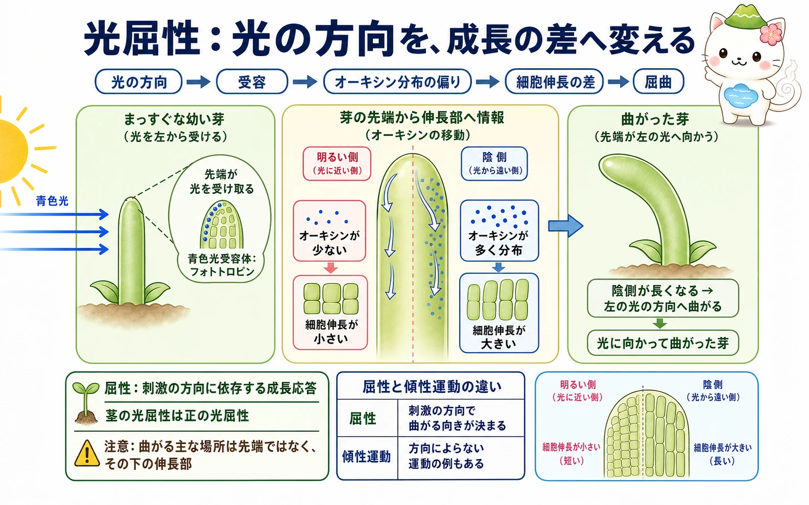
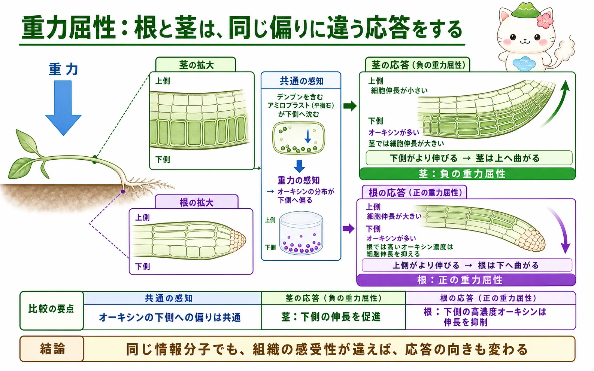

屈性とは何か
屈性は、刺激の方向に応じて曲がる向きが決まる成長応答です。光に向かう茎の光屈性、重力に対して下へ伸びる根の重力屈性、接触した支柱へ巻きつく巻きひげの接触屈性などがあります。多くは左右の細胞伸長の差によって起こるため、成長したあとの曲がりは基本的に不可逆です。
これに対し、刺激の方向ではなく刺激の強さや時刻などで動き方が決まる運動を傾性運動といいます。オジギソウの葉の運動や、昼夜で葉が開閉する就眠運動は、膨圧変化による比較的速く可逆的な運動の例です。両者を分ける鍵は「刺激の方向が曲がる向きを決めるか」です。
光屈性：光の方向を読む
茎の正の光屈性では、青色光が重要です。芽の先端では、青色光受容体であるフォトトロピンが光の向きを感じます。光を受けた情報は、先端の下にある伸長部へ伝わり、オーキシンの横方向の分布を偏らせます。
一方向から光が来ると、茎では光から遠い陰側にオーキシンが多く集まります。茎の伸長部では、オーキシンが細胞壁をゆるめる仕組みなどを通じて細胞伸長を促します。そのため陰側が明るい側より長くなり、芽全体は光の方向へ曲がります。光を受け取る主な場所は先端ですが、実際に大きく曲がる場所はその下の伸長部です。


光が芽を引っぱるわけではないよ。光の向きを受け取ったあと、植物自身が左右の伸び方を変えることで、少しずつ姿勢を変えているんだ。
重力屈性：根と茎で異なる応答
横倒しになった植物では、重力を感知する細胞の中で、デンプンを含むアミロプラストが下側へ沈みます。根では根冠のコルメラ細胞、茎では内皮などが重力感知に重要です。この変化をきっかけにオーキシン輸送が偏り、根でも茎でも下側にオーキシンが多くなります。
ところが、オーキシンの偏りの結果は根と茎で逆になります。茎では下側のオーキシンが細胞伸長を促すため、下側が長くなって茎は上へ曲がります。これは負の重力屈性です。根では高いオーキシン濃度が細胞伸長を抑えるため、下側はあまり伸びず、上側がより伸びて根は下へ曲がります。これは正の重力屈性です。

触刺激と傾性運動
巻きひげが物に触れると巻きつく接触屈性も、刺激の方向による成長の差で起こります。一方、オジギソウの葉が触れると閉じる運動は、葉枕の細胞から水が移動して膨圧が急に変わる傾性運動です。植物の「動き」には、成長で形を変えるものと、水分移動で一時的に形を変えるものがあります。
この区別は、反応にかかる時間を考える手がかりにもなります。細胞分裂や伸長を伴う屈性は時間がかかりますが、イオンと水の移動で起こる運動は比較的速く、もとへ戻ることもできます。
感覚から成長へ
光屈性と重力屈性は、受容、情報伝達、ホルモン分布、細胞応答、器官の形という段階をつなぐ好例です。植物は一つの場所で受けた情報を別の場所へ伝え、左右の細胞の違いとして形に変えます。第9冊で扱ったホルモンの情報網が、見える形の変化として現れる場面でもあります。
次に光周性や概日時計を学ぶと、植物が「どちらから光が来るか」だけでなく、「どのくらいの時間、いつ光が来るか」も使って生活を調整していることが見えてきます。
根も茎も、重力でオーキシンが下側へ集まるところまでは同じ。違うのは、その濃度を受け取った細胞が「伸びる」のか「伸びにくくなる」のか、なんだね。
この冊子の要点
- 屈性は刺激の方向に応じて曲がる向きが決まる成長応答で、傾性運動は刺激の方向によらない運動です。
- 茎の光屈性では、先端が青色光を受容し、陰側のオーキシンが増えて細胞伸長が大きくなります。
- 重力屈性ではアミロプラストの沈降を手がかりにオーキシンが下側へ偏ります。
- 茎では下側のオーキシンが伸長を促すため上へ、根では高濃度オーキシンが伸長を抑えるため下へ曲がります。
参照資料
- OpenStax Biology 2e：Plant Sensory Systems and Responses
- Taiz et al., Plant Physiology and Development, Oxford University Press.
- Gilroy & Masson (eds.), Plant Tropisms, Blackwell Publishing.